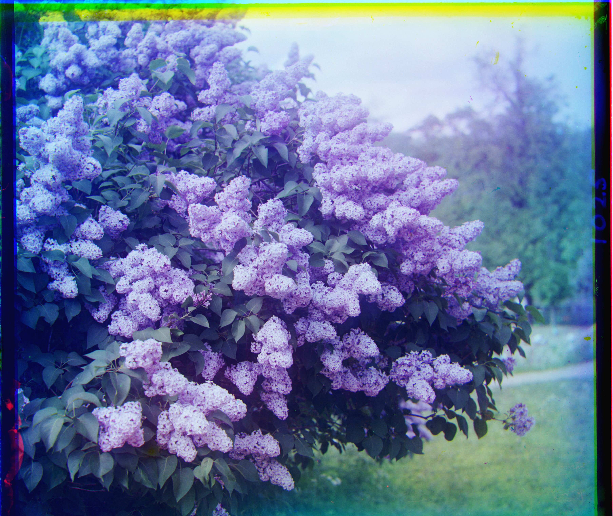

For this project, I implemented an automatic image alignment algorithm to colorize the Prokudin-Gorskii glass plate photographs. These historical images were taken by Russian photographer Sergei Prokudin-Gorskii in the early 1900s using three separate exposures through blue, green, and red color filters. The goal is to computationally align these three black-and-white images to recreate the original color photographs.
I implemented two main algorithms for aligning the color channels. For smaller images, I used exhaustive search over a displacement window of [-15, 15] pixels, splitting the input into three equal parts and using the blue channel as reference while aligning green and red to it using Sum of Squared Differences (SSD). For large .tif files where exhaustive search becomes too slow, I implemented an image pyramid approach that builds a pyramid by downsampling images by factors of 2, starts alignment at the coarsest level, and scales displacements up by 2x at each level until reaching full resolution. I also implemented multiple alignment metrics including Normalized Cross-Correlation and edge-based correlation using Sobel operators, which proved crucial for images with different brightness levels between channels.
| Image | Preview | Green displacement | Red displacement |
|---|---|---|---|
| Tobolsk | (3, 3) | (3, 6) | |
| Church | (4, 25) | (-4, 58) | |
| Cathedral | (2, 5) | (3, 12) | |
| Emir | (0, 0) | (0, 0) | |
| Three Generations | (14, 53) | (11, 112) | |
| Harvesters | (17, 60) | (13, 124) | |
| Icon | (17, 41) | (23, 89) | |
| Italil | (21, 38) | (35, 76) | |
| Lastochikino | (-2, -3) | (-9, 75) | |
| Lugano | (-16, 41) | (-29, 93) | |
| Self Portrait | (29, 79) | (33, 156) | |
| Siren |  | (-6, 49) | (-25, 96) |
| Melons | (11, 82) | (12, 156) |
| Image | Preview | Green displacement | Red displacement |
|---|---|---|---|
| Camel | (0, 5) | (-2, 10) | |
| Landscape | (1, -3) | (1, -4) | |
| Peony | (2, 8) | (3, 15) |
The Emir of Bukhara remains my biggest challenge, with poor alignment even using the pyramid approach due to extreme brightness differences between color channels where the red channel looks way darker, complex patterns on the clothing that create false matches, and large displacements that might be outside my search range. The colored borders you see are artifacts from using np.roll() to shift the images where pixels that get shifted off one edge wrap around to the other side. A few other images like sculpture and some landscapes also show moderate alignment issues, usually due to motion between exposures or large displacement requirements.
I implemented multiple alignment metrics including Normalized Cross-Correlation and edge-based correlation using Sobel edge detection, which helped with images that have different brightness levels between channels. I also added automatic border cropping to remove the colored artifacts from np.roll() and smart search range adaptation in the pyramid implementation.
The pyramid approach successfully aligns most of the Prokudin-Gorskii images efficiently. While a few challenging cases like the Emir remain problematic, the overall results demonstrate how computational techniques can bring these historical color photographs back to life. It’s pretty amazing to see 100+ year old color photography recreated through image alignment algorithms!